Ctrl+V (서식 유지됨)제목
본문 (이 영역 전체가 복사됩니다)
📷 여기에 이미지 넣기 — 썸네일 — thumb-wonkwang.png (대표 이미지로 지정)
원광대 학생부종합전형에서 먼저 확인할 것은 내 학과에 면접이 있느냐입니다. 면접은 원불교학과, 의예과, 치의예과, 한의예과, 약학과, 한약학과에서만 보고, 그 밖의 학과는 서류 100%로 뽑습니다. 수능은 11월 19일(목), 1단계 합격자 발표는 11월 20일(금), 면접은 학생부종합전형이 12월 2일(수), 지역인재종합전형이 12월 1일(화)입니다. 2단계는 1단계 성적 700점과 면접 300점을 합산하고, 면접은 학교생활기록부에 적힌 내용으로 묻는 서류 확인 면접이라 제시형 문제와 기출문제가 없습니다. 이 글은 원광대학교 2027학년도 수시모집요강으로 전형 방법, 일정, 면접 방식, 예상 질문 7개, 준비 순서를 정리하고, 같은 방식으로 면접을 보는 지역인재종합·지역의사선발 등은 한 구역으로 묶었습니다. 원광대 의약계열과 원불교학과 지원자가 읽으시면 됩니다.
1. 학생부종합전형, 2027학년도에는 어떻게 보나
학생부종합전형에서 면접을 보는 모집단위는 8곳, 58명입니다. 원불교학과 13명, 한약학과 12명, 의예과 10명, 한의예과(자연) 8명, 약학과 5명, 치의예과(자연) 4명, 한의예과(인문) 4명, 치의예과(인문) 2명입니다(24쪽). 지원자격은 국내 고등학교 졸업(예정)자 또는 법령에 의해 동등 이상의 학력이 있다고 인정된 자입니다(35쪽).
📷 여기에 이미지 넣기 — 캡처 1 — 원광대학교 2027학년도 수시모집요강 24쪽: wonkwang-2027-units.png
면접 대상은 1단계 합격자로, 학생부종합전형은 5배수입니다. 지역인재종합전형과 지역의사선발전형만 4배수입니다(33쪽).
📷 여기에 이미지 넣기 — 캡처 2 — 원광대학교 2027학년도 수시모집요강 33쪽: wonkwang-2027-target.png
1단계는 서류평가 100%(최고 700점, 최저 600점)로 5배수를 뽑고, 2단계는 1단계 성적 700점(70%)과 면접 300점(최저 270점)을 합산해 1,000점입니다(35쪽). 모집요강이 밝힌 실질반영비율은 1단계 성적 77%, 면접 23%입니다(22쪽). 면접 결시자는 불합격입니다(34쪽).
📷 여기에 이미지 넣기 — 캡처 3 — 원광대학교 2027학년도 수시모집요강 35쪽: wonkwang-2027-method.png
서류평가 자료는 학교생활기록부이고, 학교생활충실도 38%, 진로연계성 32%, 인성 및 사회성 30%를 반영합니다. 전임 및 위촉사정관 2인(의·치·한의예과는 3인)이 정성적 종합평가를 하고, 평가자에게 성명, 수험번호, 출신 고교정보, 거주지, 성별을 주지 않는 블라인드 평가입니다(32쪽). 2단계 동점자는 면접평가, 발전가능성, 인성 및 가치관, 의사소통능력, 그다음 서류평가 점수 순으로 가립니다(34쪽). 학교폭력 조치사항은 1·2호 감점 없음, 3호부터 서류평가 영역별 1~3단계 감점, 8·9호 부적격이고, 합산 감점이 4단계 이상이면 불합격입니다(76쪽).
2. 언제 보나: 수능 다음 날 1단계 발표, 12일 뒤 면접
- 2026년 9월 7일(월)~11일(금): 원서접수
- 11월 19일(목): 수능
- 11월 20일(금): 1단계 합격자 발표, 면접 시간과 장소도 이때 고지
- 12월 1일(화): 지역인재종합·지역인재기회균형 면접
- 12월 2일(수): 학생부종합·지역의사선발·기회균형·농어촌학생 면접
- 12월 18일(금): 최종합격자 발표
1단계 발표에서 학생부종합전형 면접까지 12일입니다(이 글에서 계산한 값). 1단계 합격자 발표와 최종합격자 발표는 개별 통보하지 않고 입학 홈페이지에 공지하며, 개인별 면접 일정은 바꿀 수 없습니다(30쪽).
📷 여기에 이미지 넣기 — 캡처 4 — 원광대학교 2027학년도 수시모집요강 30쪽: wonkwang-2027-schedule.png
3. 면접은 어떻게 보나
2인 1조로 구성된 면접위원이 평가 자료에 기재된 내용에 기초해 질문하고 수험생이 답합니다. 의·치·한의예과는 3인 1조입니다. 제출된 서류를 확인하는 면접이라 별도의 제시형 문제와 기출문제가 없고, 평가자에게 성명, 수험번호, 출신 고교정보, 거주지, 성별을 주지 않습니다(33쪽).
평가항목은 세 가지입니다(33쪽).
- 발전가능성 40%: 지원학과에 대한 관심도, 의욕 및 열정, 성취도, 진로계획의 실현가능성
- 인성 및 가치관 33.3%: 학교생활의 성실성, 도덕성, 인간관계, 봉사정신
- 의사소통능력 26.7%: 문제이해력, 답변의 논리성, 면접태도
평가척도는 A+부터 E까지 7등급입니다. 1인당 면접 시간은 모집요강에 적혀 있지 않습니다.
📷 여기에 이미지 넣기 — 캡처 5 — 원광대학교 2027학년도 수시모집요강 33쪽: wonkwang-2027-interview.png
면접 대상자는 주민등록증, 학생증, 청소년증, 운전면허증, 기간 만료 전 여권 등 신분증 하나를 반드시 가져가야 하고(주민등록번호가 없는 여권은 여권정보증명서를 함께 제시), 모바일 신분증은 인정하지 않습니다. 신분증에는 성명, 생년월일, 사진이 있어야 합니다. 면접 장소에서는 휴대전화를 포함한 모든 전자기기를 쓸 수 없습니다(18쪽). 복장 규정은 모집요강에 없습니다.
📷 여기에 이미지 넣기 — 캡처 6 — 원광대학교 2027학년도 수시모집요강 18쪽: wonkwang-2027-rules.png
4. 평가항목에서 나올 예상 질문 7개와 답변법
원광대는 모집요강에 면접 질문 예시를 공개하지 않았습니다. 아래 7개는 평가항목(발전가능성, 인성 및 가치관, 의사소통능력)과 "평가 자료에 기재된 내용에 기초하여 질문"한다는 방식으로 정리한 예상 질문입니다. 배점이 가장 큰 발전가능성과 그다음인 인성 및 가치관에서 세 개씩 골랐습니다. 예시 답변은 모집단위를 바꿔 쓴 가상의 예시이니 본인 경험으로 바꾸세요.
▶ 질문 1. 지원한 학과에 관심을 갖게 된 계기를 학생부 활동과 연결해 말해 보세요. (발전가능성)
왜 묻나: '지원학과에 대한 관심도'를 보는 발전가능성과 연결한 질문입니다. 서류 확인 면접이니 학생부에 적힌 장면으로 답해야 합니다.
답변 구조: 지원 이유 한 문장 → 관심을 확인한 학생부 장면 → 그때 배운 것 → 학과에서 배울 것.
답변 예시 (한약학과):
"한약학과에 지원한 이유는 식물에서 얻은 재료가 약이 되려면 성분과 품질을 과학적으로 다뤄야 한다는 것을 탐구 활동에서 느꼈기 때문입니다. 2학년 생명과학 동아리에서 같은 녹차 잎을 물 온도만 바꿔 우려 보았는데, 뜨거운 물일수록 색이 진하고 맛이 썼습니다. 같은 재료라도 다루는 조건에 따라 우러나는 성분이 달라진다는 것을 알았고, 그 뒤로 실험마다 조건을 빠짐없이 기록하는 습관이 생겼습니다. 한약학과에서 한약재의 성분과 품질 관리를 제대로 배워, 믿고 쓸 수 있는 한약을 만드는 한약사가 되고 싶습니다."
주의: "건강에 관심이 많아서"로 끝내지 말고, 학년과 활동, 장면 하나를 넣으세요.
▶ 질문 2. 지원 학과와 관련해 가장 깊이 공부한 과목 내용을 설명해 보세요. (발전가능성)
왜 묻나: 발전가능성의 '성취도'와 연결한 질문입니다. 수업에서 배운 개념을 내 말로 설명하고 더 해 본 일을 말해야 합니다.
답변 구조: 과목과 개념 → 수업에서 생긴 궁금증 → 더 해 본 일 → 알게 된 것.
답변 예시 (약학과):
"화학Ⅰ의 산과 염기의 중화 반응을 가장 깊이 공부했습니다. 제산제가 위산을 중화한다고 배웠는데, 성분이 다르면 반응도 다른지 궁금했습니다. 선생님 지도 아래 묽은 염산에 탄산칼슘이 든 제산제와 수산화 마그네슘이 든 제산제 가루를 조금씩 넣으며 pH 시험지로 비교했더니, 둘 다 산성이 약해졌지만 탄산칼슘 쪽에서만 이산화 탄소 거품이 생겼습니다. 같은 효과를 내도 반응에서 생기는 물질은 다를 수 있다는 것을 알았고, 약학과에서 약의 성분과 반응을 더 깊이 배우고 싶습니다."
주의: 교과서 설명을 길게 하지 말고, 내가 궁금했던 것과 해 본 일에 시간을 쓰세요.
▶ 질문 3. 입학 후 어떻게 공부하고, 졸업 후 어떤 일을 하고 싶나요? (발전가능성)
왜 묻나: 발전가능성의 '진로계획의 실현가능성'과 연결한 질문입니다. 학생부의 관심이 대학 공부와 졸업 뒤 진로로 어떻게 이어지는지 단계로 말해야 합니다.
답변 구조: 하고 싶은 일 한 문장 → 관심이 생긴 학생부 장면 → 입학 후 할 공부 → 졸업 후 모습.
답변 예시 (치의예과):
"저는 어르신들이 오래 잘 씹을 수 있도록 돕는 치과의사가 되고 싶습니다. 복지관 배식 봉사에서 딱딱한 반찬을 남기시는 어르신이 많았고, 여쭤 보니 씹기가 힘들어서라고 하셨습니다. 그때 씹는 일이 영양과 식사의 즐거움까지 이어진다는 것을 알았습니다. 입학하면 기초 과학과 인체 구조를 탄탄히 공부하고, 졸업 뒤에는 어르신 환자의 씹는 기능을 지키는 진료를 하고 싶습니다."
주의: 원광대 교육과정을 말하려면 학과 홈페이지에서 확인한 것만 말하세요.
📷 여기에 이미지 넣기 — 이미지 1 — 제미나이 생성: 창밖으로 노란 은행나무가 보이는 늦가을 캠퍼스 라운지에서 청진기·치아 모형·약재 유리병·비커 옆에서 답하는 여학생(실사) / "제미나이 프롬프트 1" · gem-wonkwang-1.png
(AI로 만든 이미지로, 실제 캠퍼스와 다를 수 있습니다)
▶ 질문 4. 학교생활에서 맡은 일을 꾸준히 해 온 경험이 있나요? (인성 및 가치관)
왜 묻나: 인성 및 가치관의 '학교생활의 성실성'과 연결한 질문입니다. 얼마나 오래, 어떻게 했는지를 구체적으로 말해야 합니다.
답변 구조: 맡은 일 → 꾸준히 한 방법 → 힘들었던 순간과 대처 → 배운 점.
답변 예시 (의예과):
"1학년부터 2년 동안 과학실 실험 도우미를 맡았습니다. 실험이 끝나면 기구를 씻어 제자리에 두고, 시약병 라벨이 지워지지 않았는지 확인해 목록에 적었습니다. 시험 기간에는 빠지고 싶었지만, 한 번 라벨이 바뀐 병을 찾아 선생님께 알린 뒤로는 확인을 거르지 않았습니다. 작은 확인이 사고를 막는다는 것을 배웠고, 의예과에서도 기본을 지키는 습관을 이어 가겠습니다."
주의: "성실합니다"라고 말하기보다 기간과 횟수, 한 일을 보여 주세요.
▶ 질문 5. 친구와의 관계와 옳은 일 사이에서 고민한 적이 있나요? (인성 및 가치관)
왜 묻나: 인성 및 가치관의 '도덕성'과 연결한 질문입니다. 고민한 이유와 실제로 한 행동을 함께 말해야 합니다.
답변 구조: 상황 → 고민한 이유 → 내가 한 행동 → 결과와 배운 점.
답변 예시 (한의예과 인문):
"생활과 윤리 모둠 보고서를 쓸 때, 한 친구가 인터넷 글을 출처 없이 그대로 붙여 왔습니다. 마감 전날이라 그냥 내자는 말도 있었지만, 저는 출처를 찾아 적고 우리 말로 다시 쓰자고 했고 그 부분을 친구와 나눠 함께 고쳤습니다. 늦게까지 걸렸지만 보고서는 우리 생각이 담긴 글이 됐습니다. 시간이 더 들어도 근거를 정확히 밝혀야 한다는 것을 배웠고, 환자에게 설명할 때도 그렇게 하겠습니다."
주의: 친구를 나쁘게 말하지 말고, 함께 해결한 과정을 중심에 두세요.
▶ 질문 6. 봉사활동에서 다른 사람과 관계를 맺으며 배운 것은 무엇인가요? (인성 및 가치관)
왜 묻나: 인성 및 가치관의 '인간관계, 봉사정신'과 연결한 질문입니다. 상대의 반응을 보고 내가 무엇을 바꿨는지가 중심입니다.
답변 구조: 활동 → 막혔던 장면 → 바꾼 행동 → 상대의 변화 → 배운 점.
답변 예시 (원불교학과):
"지역아동센터에서 1년 동안 초등학생 학습 멘토를 했습니다. 한 아이가 문제집을 펴지 않고 엎드려 있곤 했는데, 공부를 재촉하는 대신 먼저 그날 있었던 일을 물었습니다. 학교에서 속상한 일이 있었다는 이야기를 들은 뒤로는 처음 10분은 이야기를 나누고 공부를 시작했고, 그 아이가 숙제를 끝까지 하는 날이 늘었습니다. 마음을 먼저 살펴야 도움이 닿는다는 것을 배웠고, 원불교학과에서 사람의 마음을 돌보는 공부를 깊이 하고 싶습니다."
주의: 봉사 시간보다 그 안에서 바꾼 행동 하나를 말하세요.
▶ 질문 7. 학생부에 적힌 탐구 내용 하나를 중학생에게 설명하듯 쉽게 말해 보세요. (의사소통능력)
왜 묻나: 의사소통능력의 '문제이해력, 답변의 논리성'과 연결한 질문입니다. 질문이 요구한 것(쉽게)에 맞춰 답해야 합니다.
답변 구조: 핵심 한 문장 → 쉬운 비유 → 순서대로 설명 → 한 문장 정리.
답변 예시 (한의예과 자연):
"혈당 조절은 몸이 피 속 포도당 양을 알맞게 맞추는 일입니다. 방의 온도를 맞추는 냉난방기와 비슷합니다. 밥을 먹어 혈당이 오르면 이자에서 인슐린이 나와 세포가 포도당을 받아들이고 간이 포도당을 글리코젠으로 저장하게 합니다. 오래 굶어 혈당이 내려가면 글루카곤이 나와 간의 글리코젠을 포도당으로 바꿔 혈당을 올립니다. 두 호르몬이 반대로 작용해 혈당을 일정하게 지킨다는 것이 핵심입니다."
주의: 질문이 잘 이해되지 않으면 "○○을 여쭤보신 것이 맞을까요?"라고 확인해도 됩니다.
5. 답변은 이 4단계로 만드세요
어떤 질문이든 결론 → 경험 → 배운 점 → 연결 순서로 40~60초 안에 말하세요. 아래 도식은 질문 1을 4단계로 쪼갠 것입니다.
📷 여기에 이미지 넣기 — 도식 — structure-wonkwang.png
6. 지역인재종합·지역의사선발 등은 이렇게 다릅니다
면접 방식과 평가항목은 학생부종합전형과 같습니다(33쪽). 다른 것은 지원자격, 인원, 배수, 날짜, 수능 최저이고, 지역의사선발은 점수 배분도 다릅니다.
- 지역인재종합전형: 면접을 보는 6개 학과 178명(간호학과 등 그 밖의 학과는 서류 100%, 22·24쪽). 의예과 45명(전북 30, 호남 15), 치의예과(자연) 26명, 한의예과(자연) 35명, 한의예과(인문) 16명, 약학과 33명, 한약학과 23명입니다(24쪽). 1단계 4배수, 2단계 1단계 성적 700점 + 면접 300점, 면접은 12월 1일(화)입니다(30·38쪽). 전북권 또는 호남권 고교에서 입학부터 졸업까지 전 과정을 이수해야 하고, 한약학과는 비수도권으로 넓혀 뽑습니다(37쪽).
- 지역인재기회균형전형: 면접을 보는 학과 9명, 호남권 고교 이수자 중 기초생활수급자·차상위계층·한부모가족 지원대상 가구 학생, 1단계 5배수, 면접 12월 1일(화)입니다(24·30·39쪽).
- 지역의사선발전형: 의예과 17명, 1단계 4배수, 2단계 1단계 성적 600점 + 면접 400점(최저 340점)이고 면접은 12월 2일(수)입니다(30·41·42쪽). 의사 면허 취득 후 의무복무지역에서 10년 의무복무를 해야 합니다(42쪽).
- 기회균형전형·농어촌학생전형(정원외): 면접을 보는 학과 각 11명, 의예·치의예(자연)·한의예(자연)·약학·한약학과, 1단계 5배수, 면접 12월 2일(수), 수능 최저 없음입니다(24·43·45·46쪽).
📷 여기에 이미지 넣기 — 캡처 7 — 원광대학교 2027학년도 수시모집요강 37쪽: wonkwang-2027-local.png
2022학년도 이후 중학교 입학자 중 의·한의·치·약대(간호대 포함) 지원자는 비수도권 중학교 요건과 거주 요건도 있습니다(37쪽). 수능 최저는 지역인재종합이 탐구 '상위 1과목', 학생부종합이 '2과목 평균'으로 다릅니다(35·37쪽).
7. 10월 31일(토)부터 면접 당일까지 준비 순서
10월 31일(토) ~ 11월 18일(수): 수능 공부가 먼저이니 주말에 조금씩 합니다. 학생부를 처음부터 읽고 수업 장면 두 개, 활동 세 개를 골라 "왜 시작했나, 내가 한 일, 막힌 점, 다음에 한 일"을 한 줄씩 적습니다. 질문 1·3 초안을 만듭니다.
11월 19일(목): 수능.
11월 20일(금), 1단계 발표: 입학 홈페이지에서 결과와 면접 시간·장소를 확인합니다. 개별 통보는 없습니다(30쪽).
11월 21일(토) ~ 26일(목): 질문 2·4·5·6을 다른 활동으로도 답해 봅니다. 모의 면접을 녹음하고 60초를 넘는 답을 표시합니다.
11월 27일(금) ~ 30일(월): 질문 7처럼 앞 답을 짚는 질문을 가족에게 부탁해 연습합니다. 표시한 답을 줄이고 실물 신분증과 가는 길을 확인합니다.
12월 1일(화): 새 답변은 만들지 않습니다. 지역인재종합·지역인재기회균형 지원자는 이날이 면접입니다.
12월 2일(수), 면접: 실물 신분증을 챙기고 일찍 도착합니다. 면접 장소에서는 휴대전화를 쓸 수 없습니다(18쪽).
12월 18일(금): 최종합격자 발표(30쪽).
8. 원광대 학생부종합 면접 자주 묻는 것들
Q. 학생부종합전형과 지역인재종합전형에 같이 지원할 수 있나요?
A. 아닙니다. 원광대는 최대 5회 지원할 수 있지만 학생부종합·지역인재종합·지역인재기회균형·지역의사선발전형 중에서는 1개만 고를 수 있습니다(16·21쪽).
Q. 면접 날짜나 시간을 바꿀 수 있나요?
A. 면접 시간과 장소는 1단계 발표 때 고지하고, 개인별 면접 일정은 변경할 수 없습니다(18·30쪽).
Q. 제시문을 읽고 푸는 문제가 나오나요?
A. 제출된 서류를 확인하는 면접이라 별도의 제시형 문제와 기출문제가 없습니다(33쪽).
Q. 면접 복장은 어떻게 하나요?
A. 모집요강에 복장 규정은 없습니다. 실물 신분증은 꼭 챙기세요. 모바일 신분증은 인정하지 않습니다(18쪽).
Q. 수능 최저가 있나요?
A. 의예·치의예·한의예과는 수학 포함 3개 영역 합 6, 약학과는 7, 한약학과는 상위 3개 영역 합 9 이내이고, 원불교학과는 없습니다(35쪽). 미달하거나 지정영역 응시를 어기면 불합격입니다(35쪽).
📷 여기에 이미지 넣기 — 캡처 8 — 원광대학교 2027학년도 수시모집요강 35쪽: wonkwang-2027-minimum.png
9. 면접 전날 체크리스트
□ 지원 학과 관심 계기를 학생부 장면 하나와 함께 60초 안에 말할 수 있다
□ 가장 깊이 공부한 과목 내용과 더 해 본 일을 말할 수 있다
□ 입학 후 공부 계획과 졸업 후 진로를 단계로 말할 수 있다
□ 학생부 활동 세 개를 "내가 한 일, 막힌 점, 다음에 한 일"로 말할 수 있다
□ 녹음으로 60초를 넘는 답을 줄였다
□ 1단계 발표 공지에서 내 면접 시간과 장소를 확인했다
□ 성명·생년월일·사진이 있는 실물 신분증을 챙겼다
10. 같은 시기에 면접 보는 대학
원광대와 같이 지원했다면 이어서 보세요.
▷ 전남대 고교생활우수자Ⅰ 면접 총정리 (12월 2일)
▷ 충남대 학생부종합Ⅰ(면접전형) 면접 총정리 (12월 1일~4일)
▷ 전북대 큰사람전형 면접 총정리 (11월 26일, 지역인재 11월 28일)
11. 함께 보면 좋은 글
원광대 학생부종합 면접은 학생부에 적힌 수업과 활동을 내 말로 설명하고, 그 경험이 지원한 학과와 졸업 뒤 진로로 어떻게 이어지는지 보여 주는 자리입니다.
※ 이 글의 내용은 원광대학교 2027학년도 수시모집요강에서 인용했습니다. 괄호 안 쪽수는 모집요강의 쪽수입니다. 예상 질문은 모집요강의 평가항목을 바탕으로 정리한 것이며 대학이 공개한 질문이 아닙니다. 면접 시간과 장소는 원광대 입학 홈페이지 공지를 꼭 확인하세요.
원광대를 포함한 76개 대학의 2027학년도 면접 정보와 71개 학과별 면접 질문·답변 예시, 대학이 공개한 실제 면접 기출을 무료로 정리한 사이트입니다. 회원가입 없이 바로 볼 수 있고, 질문을 무작위로 뽑아 60초 타이머로 연습하는 모의 면접도 있습니다.
태그 (#은 에디터가 자동으로 붙이므로 그대로 붙여 넣어도 됩니다)
넣을 이미지 목록 (docs/promo/img 폴더)
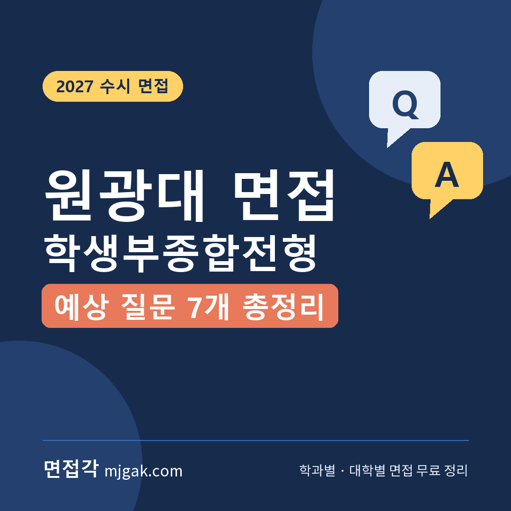
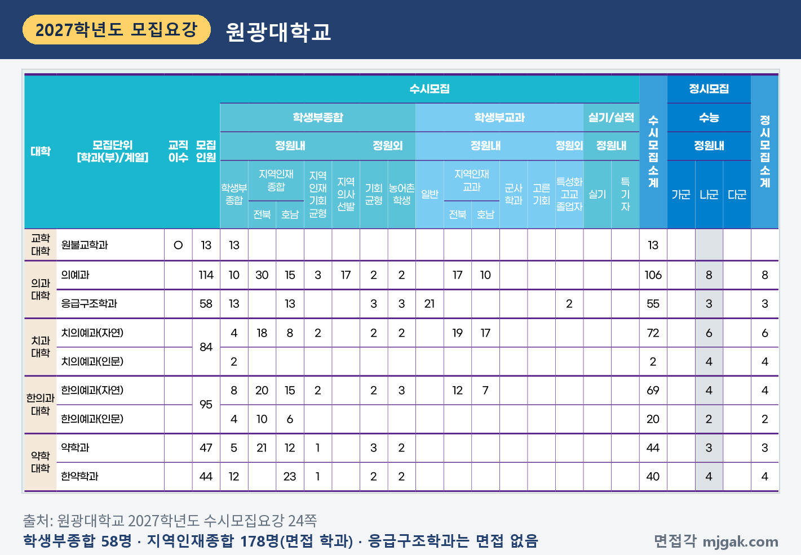
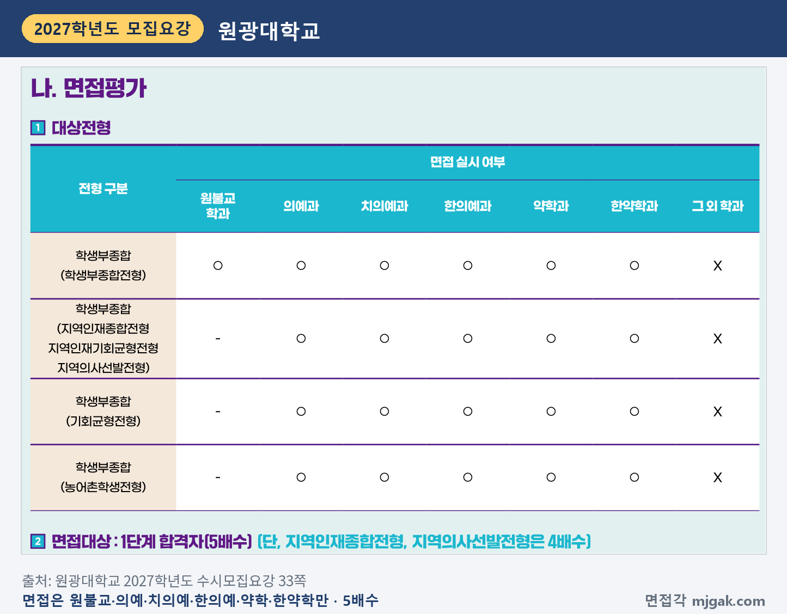
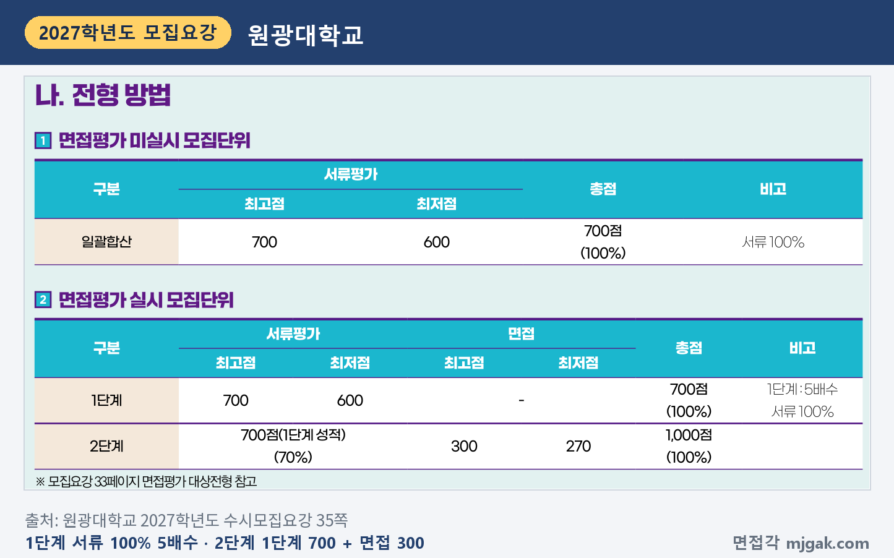
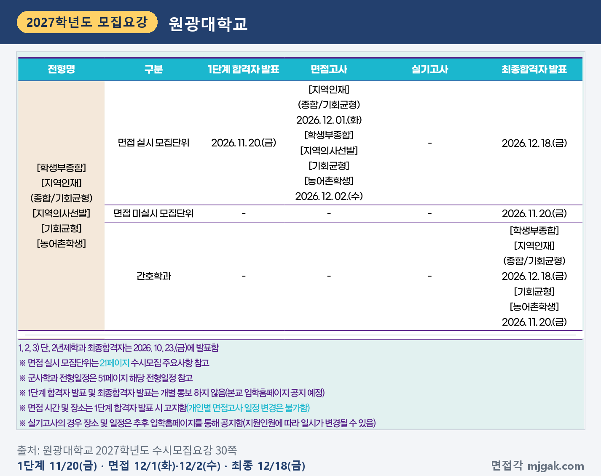
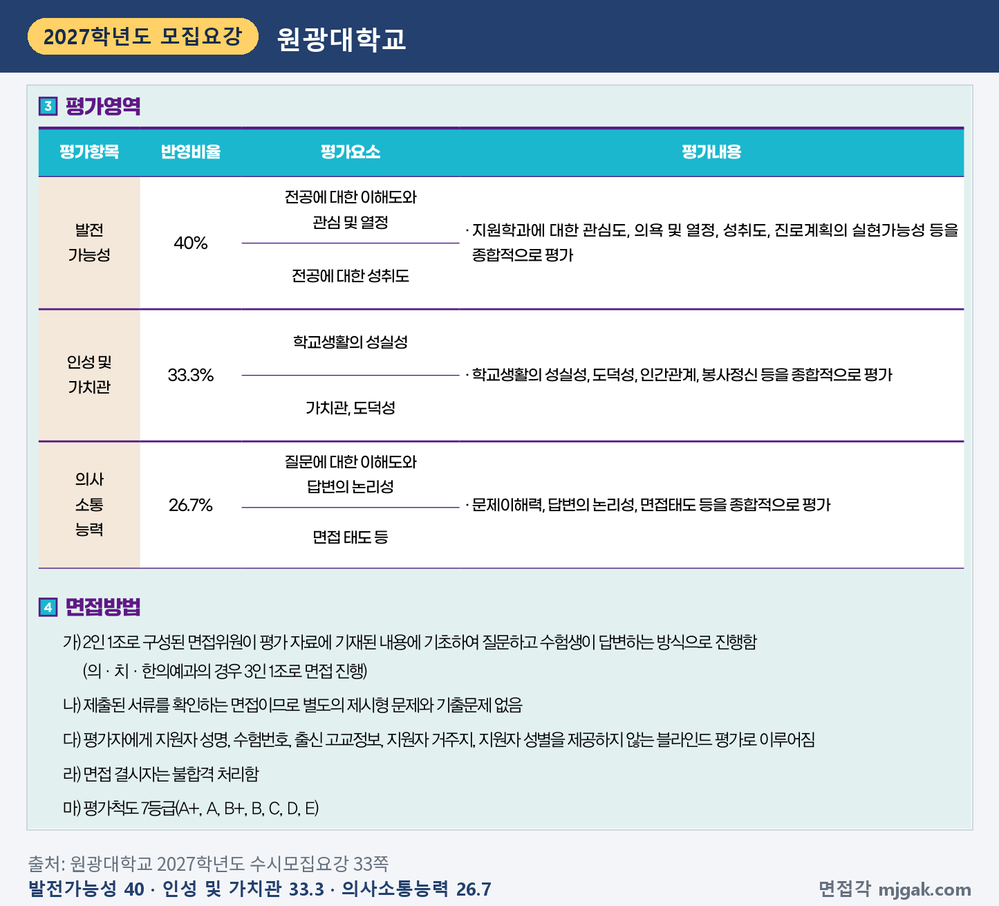
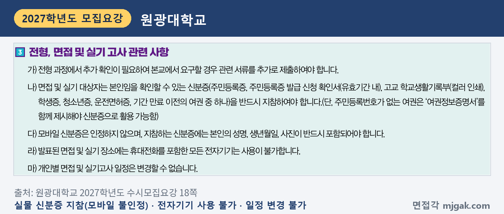
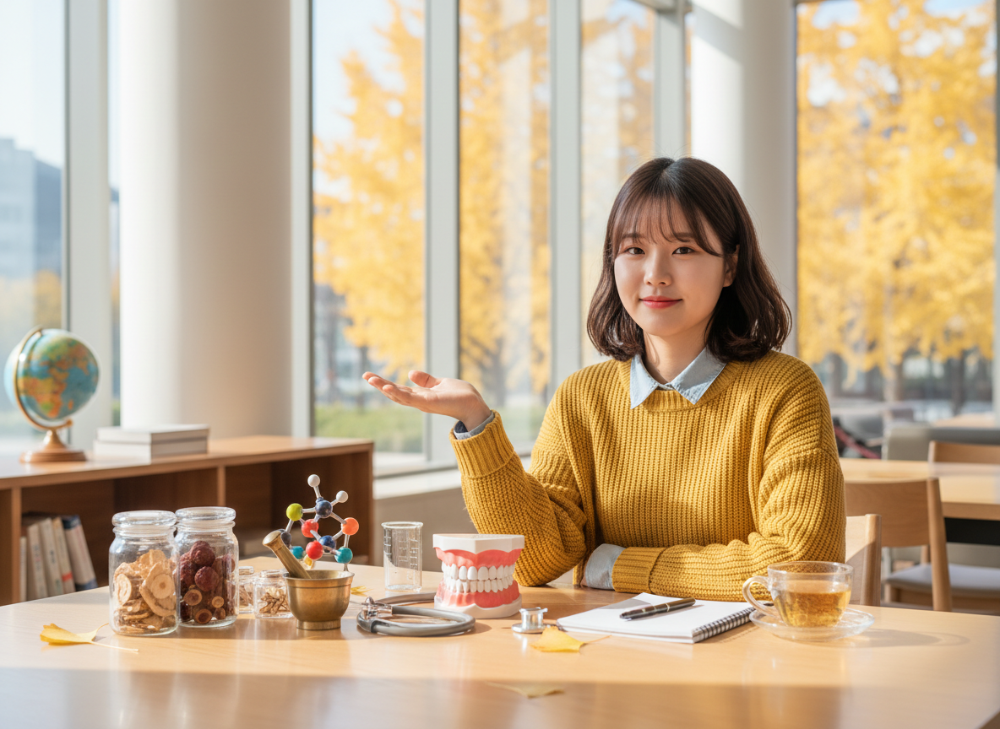
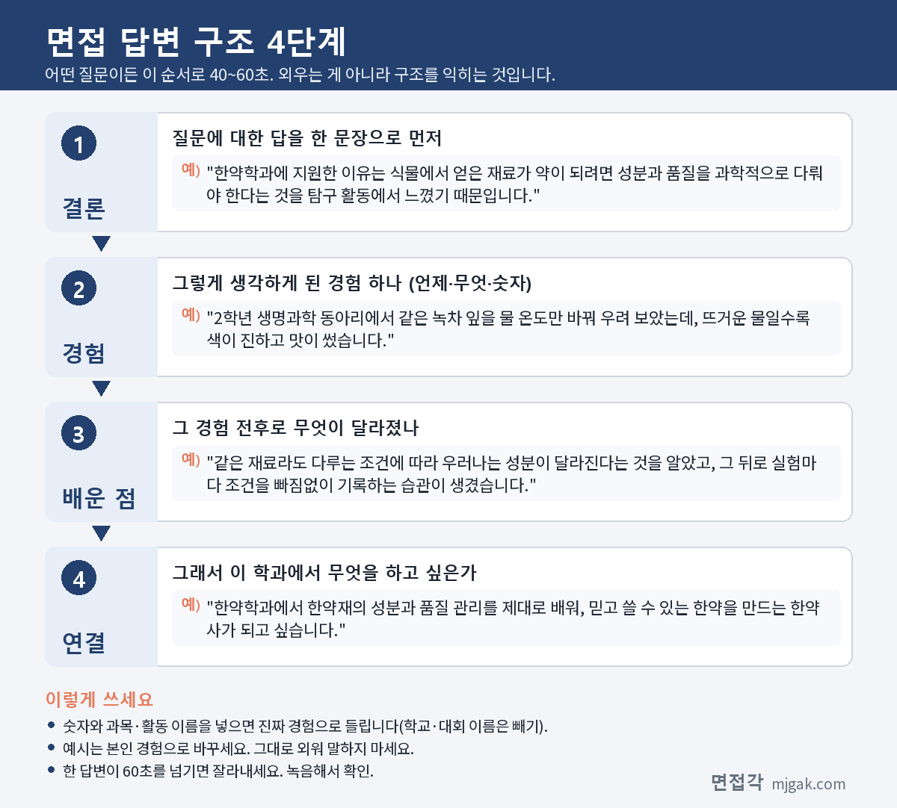
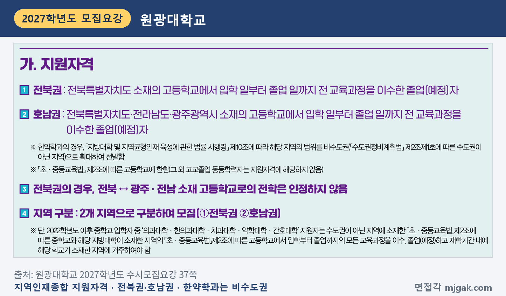
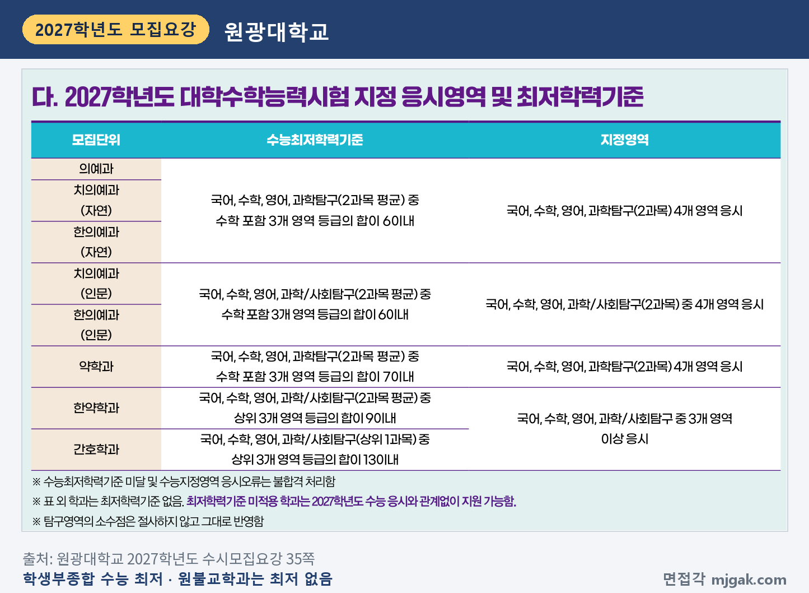
제미나이 프롬프트 1 — 창밖으로 노란 은행나무가 보이는 늦가을 캠퍼스 라운지에서 청진기·치아 모형·약재 유리병·비커 옆에서 답하는 여학생(실사) (4:3) — 제미나이에 그대로 붙여 넣어 이미지를 만드세요